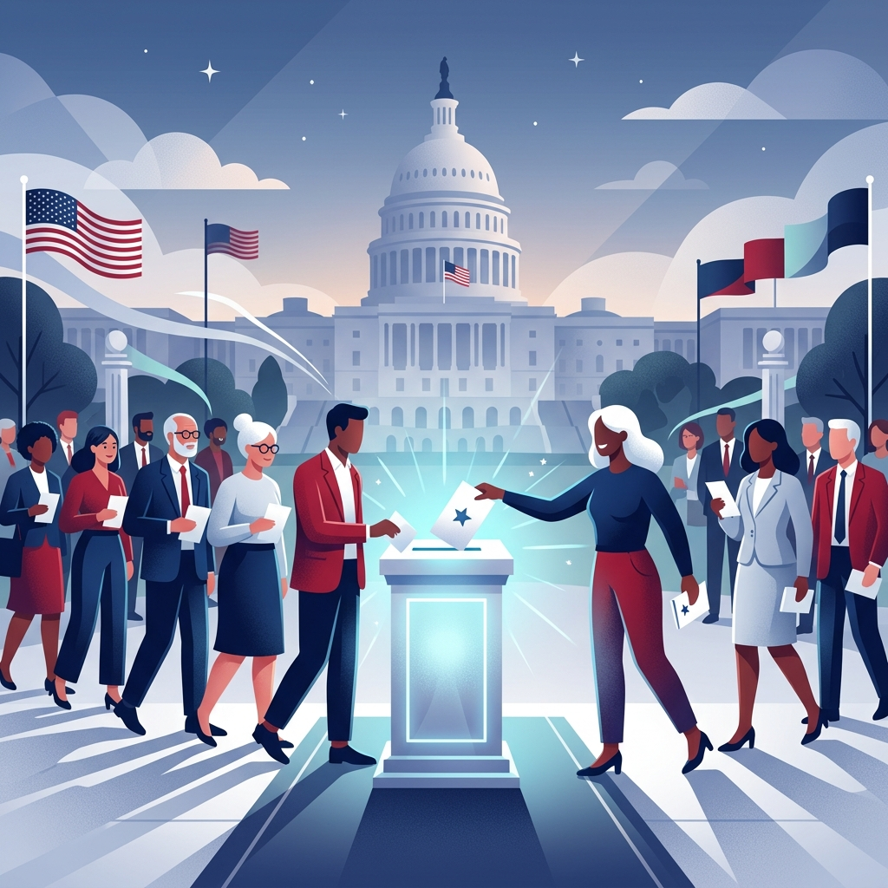

Understand How
Elections Work
Navigate the full election process — from voter registration to final results — with clear, step-by-step guidance.

Election Timeline
See the full chronological roadmap from campaign kickoff to certification of results.
Explore →Step-by-Step Guide
Detailed breakdown of every phase: registration, primaries, general election, and more.
Learn More →Common Questions
Answers to the most frequently asked questions about voting and elections.
View FAQ →AI Assistant
Chat with our election expert bot for instant, personalized answers to your questions.
Chat Now →Election Timeline
The U.S. Presidential Election cycle spans roughly 2 years. Here's how it unfolds.
🏛️ Campaign Announcement
Candidates officially declare their intent to run and begin building campaign teams, raising funds, and touring early primary states.
- File candidacy with the FEC
- Build campaign infrastructure
- Begin fundraising
- Hire campaign staff
🗳️ Primary Season
Each party holds primary elections and caucuses in all 50 states to select their presidential nominee.
- Iowa Caucuses (traditionally first)
- New Hampshire Primary
- Super Tuesday (many states vote)
- Delegate accumulation
🎉 National Conventions
Each major party holds a national convention where delegates formally nominate their presidential and vice-presidential candidates.
- Delegate roll call vote
- VP nominee announcement
- Platform adoption
- Acceptance speeches
⚔️ General Election Campaign
Nominated candidates compete head-to-head with rallies, debates, and ads targeting swing states.
- Presidential debates (3 rounds)
- VP debate
- Swing-state campaigning
- Early voting begins
📬 Election Day
Citizens cast their votes in person or by mail. Results are reported throughout the night.
- Polls open 6AM–8PM (varies by state)
- In-person & mail-in ballots counted
- Media projections begin
- Electoral vote totals tracked
🏆 Certification & Inauguration
The Electoral College meets, Congress certifies results, and the new president is inaugurated.
- Electoral College meets (December)
- Congress certifies results (Jan 6)
- Inauguration Day (Jan 20)
- New administration begins
Step-by-Step Voter Guide
Everything you need to know to participate in an election from start to finish.
Registration
Your first step towards exercising your civic duty.
Check Eligibility
Confirm you are a U.S. citizen, at least 18 years old on Election Day, and meet your state's residency requirements.
Register to Vote
Register online at vote.gov, by mail, or in person at your local election office. Deadlines vary by state (15–30 days before election).
Verify Your Registration
Confirm your registration status online through your state's election website. Update your address if you've moved.
Receive Voter Card
After registering, you'll receive a voter registration card with your polling location address and precinct number.
Preparation
Knowledge is power. Learn about the candidates and your polling place.
Research Candidates & Issues
Review candidate positions, endorsements, and voting records. Study ballot measures using non-partisan voter guides.
Find Your Polling Place
Look up your polling location at vote.gov using your registered address. Polling places can change between elections.
Check ID Requirements
Many states require photo ID. Check your state's specific requirements at least a week before Election Day.
Consider Early Voting or Mail-In
Most states offer early voting (1–45 days before), and many allow no-excuse absentee/mail-in voting.
Voting Day
Make your voice heard. Cast your official ballot.
Go to Your Polling Place
Arrive with your voter registration card and any required ID. Polls typically open at 6–7 AM and close at 7–8 PM.
Check In at the Poll
A poll worker will find your name on the registered voter list and verify your identity per state requirements.
Cast Your Ballot
You'll be given a ballot (paper or electronic). Read all instructions carefully. Vote for all races you choose.
Submit & Get Your Sticker
Feed your ballot into the scanner (or hand it to a poll worker) and receive your "I Voted" sticker!
After Voting
Track results and witness the peaceful transfer of power.
Track Your Mail Ballot (if applicable)
Many states let you track whether your mail-in ballot was received and counted using your state's ballot tracker.
Watch Election Results
Results come in throughout election night and may take days for final counts in close races.
Official Certification
State election officials certify results after reviewing all ballots, including provisional and late mail-in ballots.
Electoral College Vote
In December, each state's electors cast official electoral votes. Congress certifies this count on January 6.
Frequently Asked Questions
Quick answers to common questions about the U.S. election process.
To vote in federal elections, you must be a U.S. citizen, at least 18 years old on or before Election Day, and registered to vote in your state. Some states have additional requirements. Felons may or may not be eligible depending on their state.
The Electoral College is the system used to elect the President and Vice President. Each state receives a number of electors equal to its total Congressional representation (House + Senate). There are 538 total electoral votes, and a candidate needs 270 to win. In 48 states, the winner-take-all rule applies.
A primary election is held within each party to select their candidate (nominee) for the general election. The general election is the final election where all party nominees compete for the office. Primaries can be "open" (any voter can participate) or "closed" (only registered party members).
Many states allow voting by mail, also called absentee voting. Some states send ballots to all registered voters automatically. Others require you to request a mail-in ballot. Deadlines for requesting and returning mail ballots vary — check your state's election website for specifics.
A primary is a straightforward secret ballot vote held at polling places. A caucus is a public gathering where voters physically group themselves by candidate preference and discuss choices. Caucuses are more time-intensive and interactive. Most states use primaries; Iowa was famous for its caucuses until recently.
It depends on the state and the volume of mail-in ballots. Some states count mail ballots before Election Day; others can't start until polls close. In close races or high-volume states (like California), final counts can take days or even weeks. The media's "calling" a race is a projection, not an official result.
Gerrymandering is the manipulation of electoral district boundaries to favor one political party over another. It's done by state legislatures after each Census. "Packing" concentrates opposing voters into few districts; "cracking" splits them across many districts. It primarily affects House of Representatives races.
If no candidate reaches 270 electoral votes (e.g., a 269–269 tie), the election goes to the House of Representatives, which chooses the President (each state delegation gets one vote). The Senate then chooses the Vice President from the top two VP candidates.
Voter ID laws vary significantly by state. Some states strictly require a government-issued photo ID (like a driver's license or passport), others accept non-photo IDs (like utility bills), and some do not require an ID at all if you sign an affidavit. Always check your state's specific ID requirements before heading to the polls.
A swing state (or battleground state) is a state where both major political parties have similar levels of support among voters, meaning that either candidate has a reasonable chance of winning the state's electoral votes. Because most states reliably vote for one party, presidential campaigns focus almost all their time and advertising money on these few swing states.
A provisional ballot is used to record a vote when there are questions about a given voter's eligibility that must be resolved before the vote can count. For example, if your name is not on the voter roll at your polling place, or if you forgot your required ID, you can cast a provisional ballot. Officials will verify your eligibility after Election Day before counting it.
While theoretically possible, it is extremely difficult for third-party or independent candidates to win due to the Electoral College's winner-take-all system and ballot access laws. However, third-party candidates often influence elections by drawing votes away from major party candidates (the "spoiler effect") or bringing niche issues to the national debate stage.
AI Election Assistant
Ask anything about elections, voting, or the democratic process.